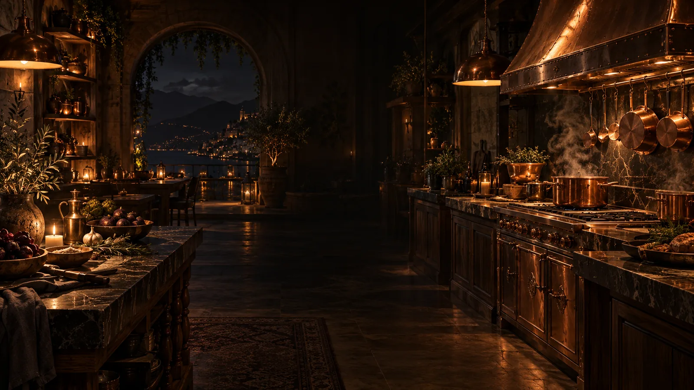
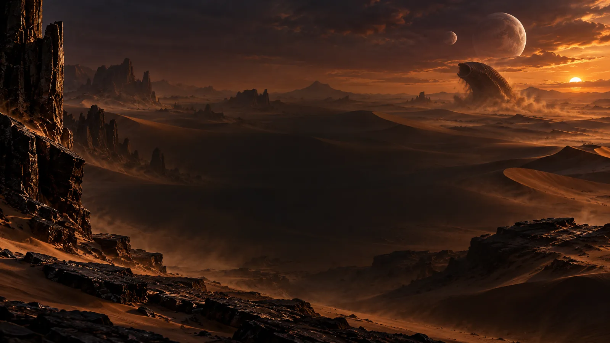
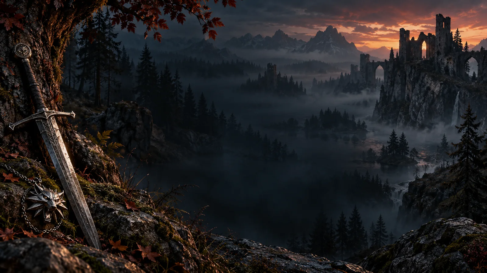
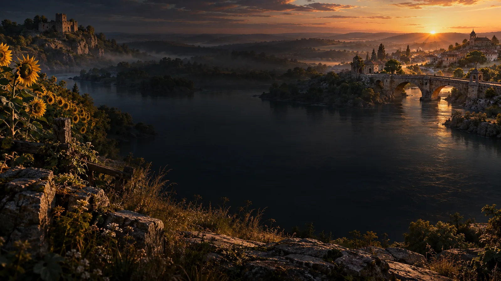

A LITTLE ESCAPE. EXTRAORDINARY WORLDS.
Find your
next world.
THE CINEMATIC COLLECTION / VOLUME 02
Four characters. Four bonus adventures. From a sandworm ride on Arrakis to a midnight hunt on the Continent.
Choose your world ↓
01 / THE ORIGINAL↗
COPPER · FIRE · FORTUNE
The Pass
A little heat. A touch of gold.
Enter the kitchen →
02 / ARRAKIS↗
SPICE · SAND · DESTINY
Dune
The desert holds its secrets.
Walk the dunes →
03 / THE CONTINENT↗
SILVER · SIGNS · LEGEND
The Witcher
Fortune favours the wolf.
Follow the path →
04 / A NEW DAWN↗
HOPE · HOME · RESILIENCESunflower
Sunflower
Rising
Build toward a brighter dawn.
Find the light →Free demo credits. No purchases, deposits or cash prizes.
See the design direction ↗FOUR WORLDS. FOUR ADVENTURES.
Meet your guide.
Find your story.
Each world has a character who reacts to your play, its own atmosphere and a different bonus round. Earn an adventure after five spins, or choose Try bonus to explore it immediately.